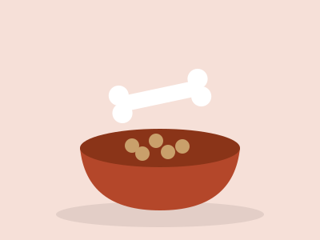

Noticias del mundo de las mascotas
Actualidad
Huella Abierta consigue 40 adopciones este año
La protectora valenciana celebra un año récord gracias a la ayuda de sus PawMates y al trabajo de sus voluntarios.
Las Provincias · 10/11/2026

Salud
Cómo preparar la casa para un perro adulto
Consejos sencillos para que la llegada de un PawFriend adulto sea tranquila para todos.
El Mundo Animal · 6/11/2026

Consejos
Revisiones veterinarias: cada cuánto y por qué
Un repaso a las revisiones básicas que necesita una mascota rescatada durante su primer año.
Salud Animal Hoy · 3/11/2026